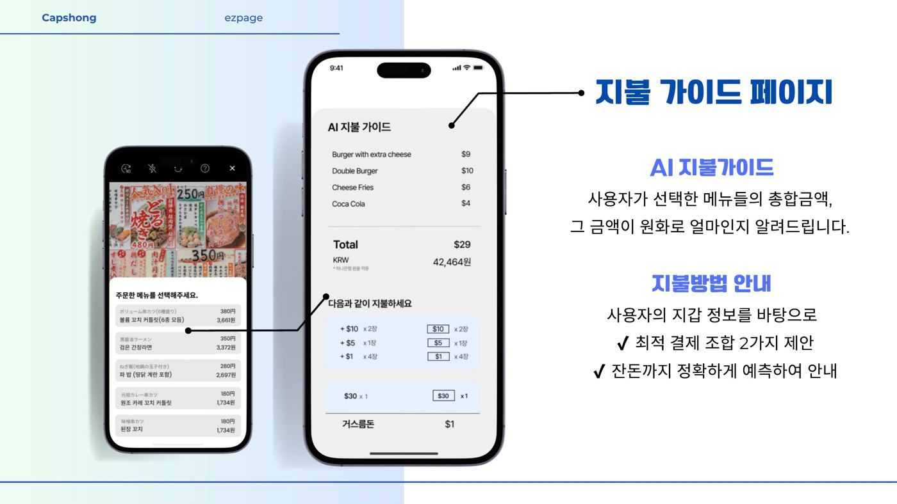
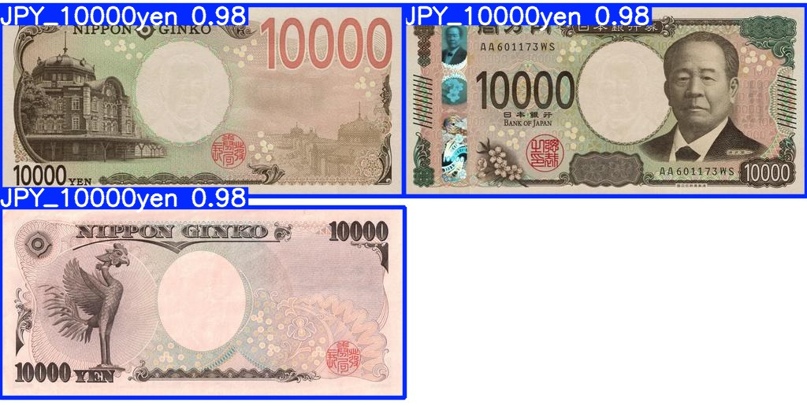

Capstone Design Project · Team Leader
Ezpage
An AI-powered travel payment guide that helps travelers recognize foreign currency, understand local prices, and determine which bills and coins to use when paying..

Overview
Ezpage is an AI-powered travel payment app inspired by the difficulties I experienced when using unfamiliar cash abroad.
It helps travelers recognize foreign bills and coins, understand local prices in their home currency, and determine how to pay using the cash they have. Rather than simply identifying currency denominations, Ezpage provides visual guidance on which bills and coins to use and how much change to expect.


Key Contributions
- Product Ideation & Problem Definition: Initiated the project based on a personal travel experience. Defined the core problem as helping travelers make confident payment decisions,rather than simply recognizing foreign currency.
- Project Leadership & MVP Prioritization: Led a five-member team, coordinating development schedules, responsibilities, and priorities. With limited frontend and backend resources, prioritized essential AI-powered payment features and reduced the scope of nonessential functionality to deliver a working prototype within the timeline.
- YOLOv8-Based Currency Recognition: Contributed to collecting and preprocessing USD and JPY banknote and coin images, generating augmented and synthetic training data, and training and evaluating a YOLOv8 object detection model. Developed functionality to identify currency denominations, count detected bills and coins, and calculate their total value.
- AI Integration & Cross-Functional Development: Integrated AI model inference with the mobile application through APIs. Leveraged my frontend development experience to help resolve API integration challenges, supporting communication between the AI, backend, and frontend components.
- User-Centered Payment Experience: Recognized that accurate currency detection alone did not fully solve the user's problem. Helped extend the service to recommend payment combinations based on the cash available in the user's wallet and visually display theexpected change.
Outcome & Learnings
Delivered a functional mobile app prototype integrating menu recognition, currency scanning, exchange-rate conversion, payment guidance, and travel expense management.
The project reinforced that strong model performance does not necessarily translate into a useful product. What travelers needed was not simply information about currency denominations, but clear guidance on which bills and coins to use in an actual payment situation.
As a project leader, I learned to balance user needs with technical feasibility, make deliberate trade-offs under time and resource constraints, and contribute hands-on when technical challenges threatened the team's progress.